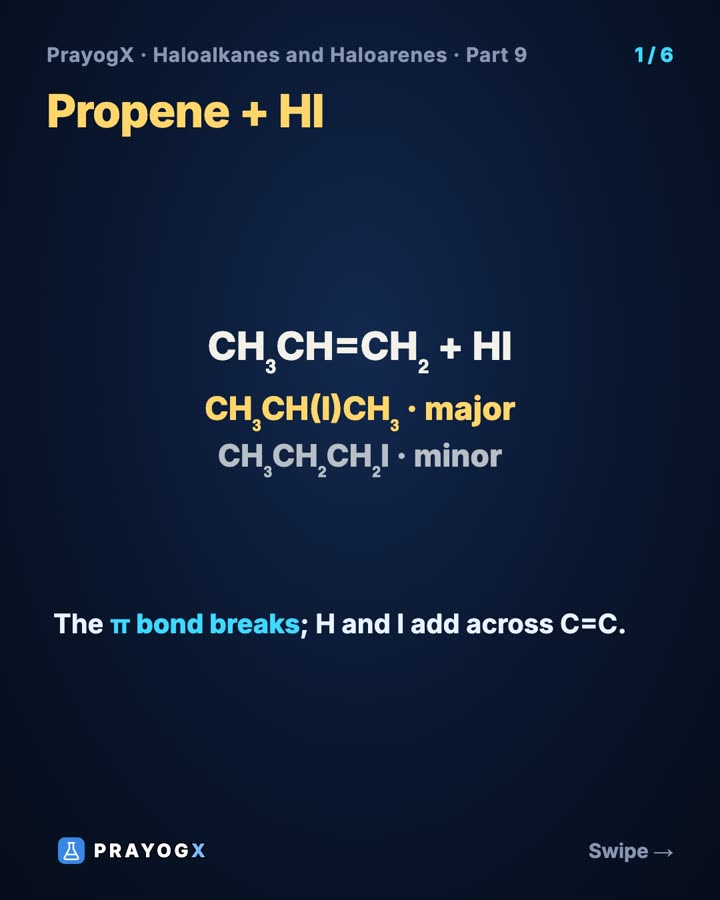
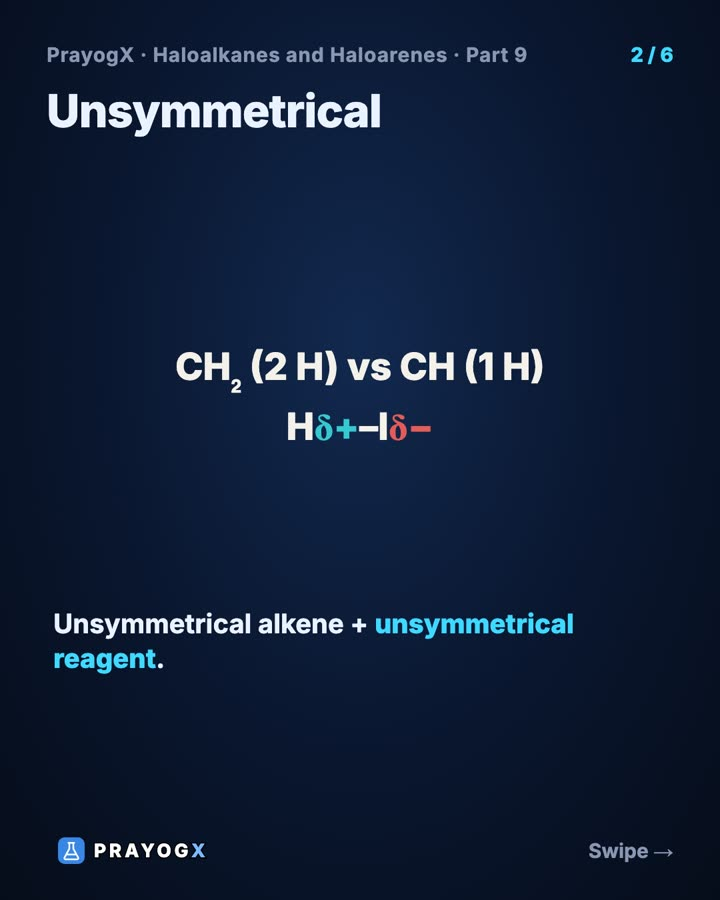
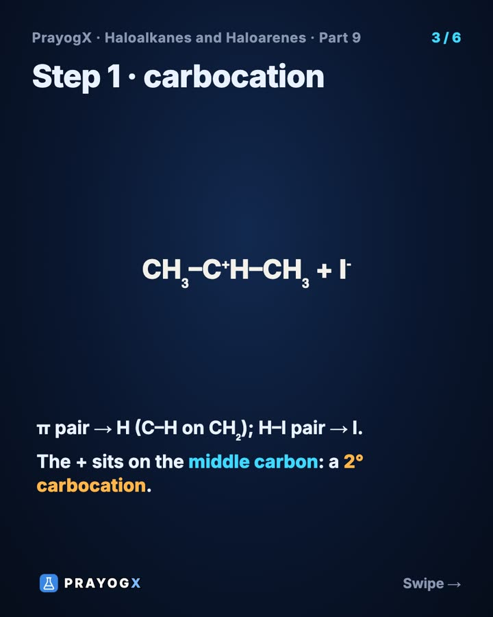
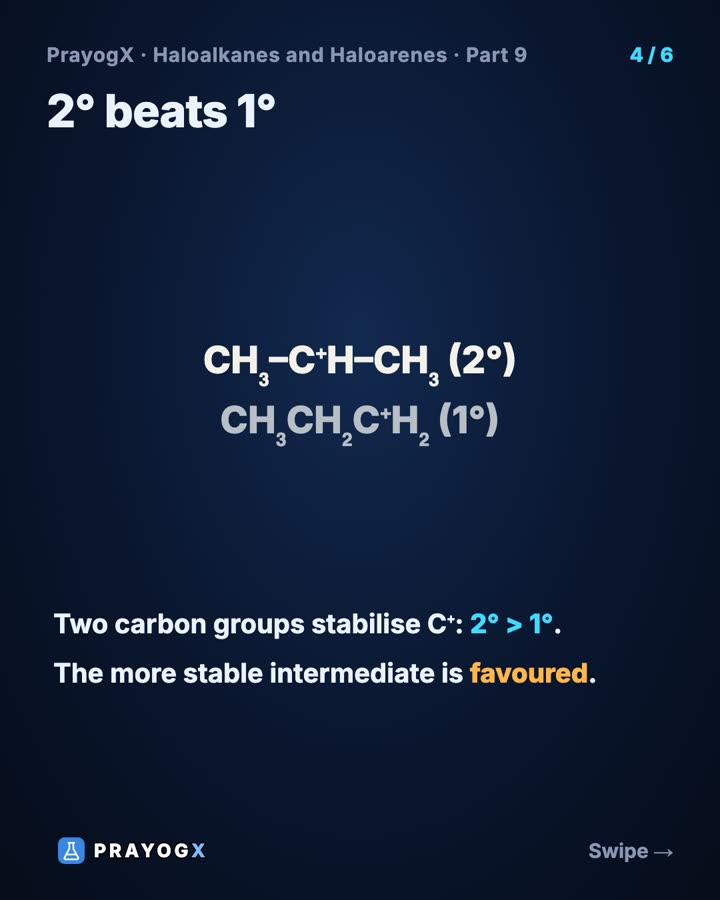
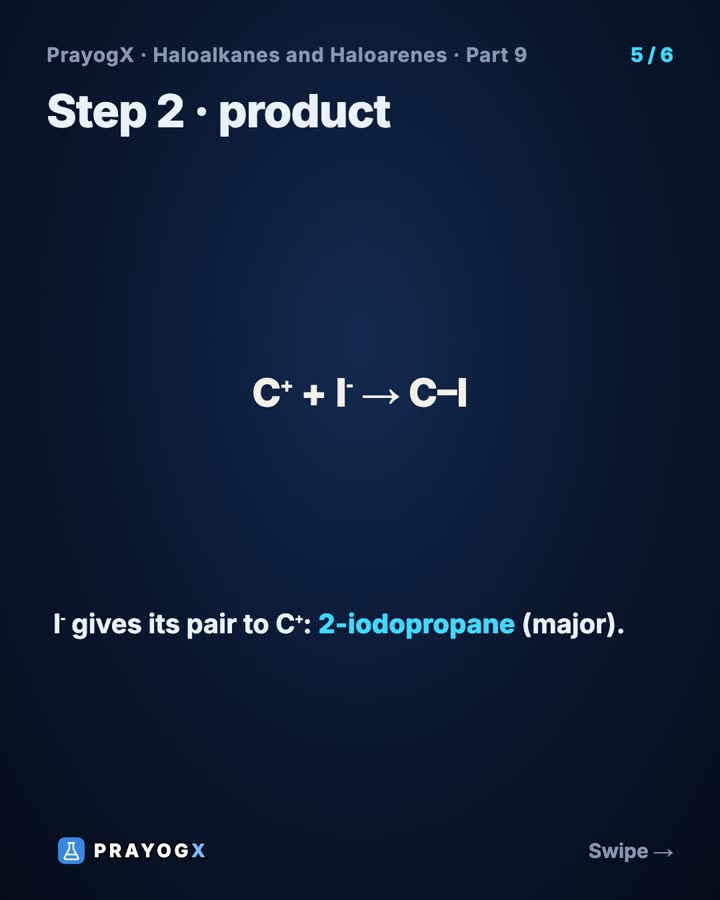
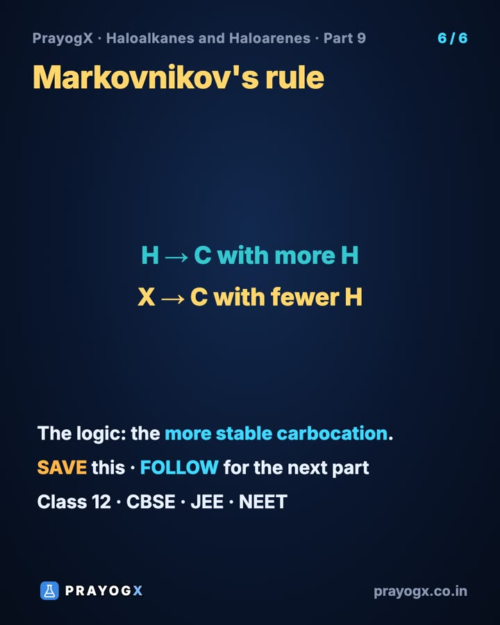
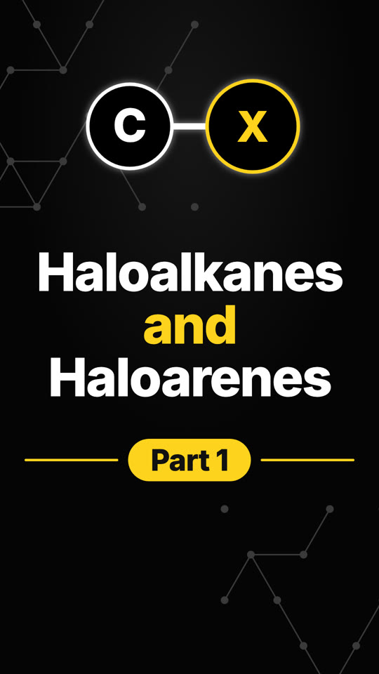

Markovnikov's Rule: Addition of HX to Alkenes
Video not playing? YouTube
Propene + HI gives 2-iodopropane (major) and 1-iodopropane (minor). In step 1 the π electrons of C=C move to the H of HI, forming a C–H bond on the CH₂ carbon, while the H–I pair goes to iodine (I⁻); the + is left on the middle carbon, a secondary carbocation. A 2° carbocation is more stable than a 1° one, so that pathway is favoured, and I⁻ then bonds to it. Markovnikov's rule: H goes to the double-bond carbon with more H atoms, the halogen to the one with fewer.
Download the short notesPDF, 247 KB · the reaction, the two-step mechanism with curly arrows, carbocation stability, the rule and solved examples Download the memory cards
PDF, 529 KB · 6 cards: the whole topic at a glance, for quick revision Download the CBSE worksheet
PDF, 222 KB · 10 questions in the CBSE pattern, write your answers on the sheet; answer key at the endDownload the JEE Main DPP
PDF, 234 KB · 10 MCQs: JEE Main PYQs + practice, answer key and solutions Up next in this chapter
 Addition of Halogens to Alkenes: the Bromine TestEthene + Br₂ in CCl₄ gives BrCH₂–CH₂Br: the π bond breaks and one Br adds to each double-bond carbon, giving a vic-dibromide. The reddish-brown colour of bromine disappears, so the reaction is the lab test for unsaturation. Propene gives 1,2-dibromopropane and cyclohexene gives 1,2-dibromocyclohexane. Benzene fails the test: adding Br₂ would destroy its aromatic stability, so the colour stays.Chemistry
Addition of Halogens to Alkenes: the Bromine TestEthene + Br₂ in CCl₄ gives BrCH₂–CH₂Br: the π bond breaks and one Br adds to each double-bond carbon, giving a vic-dibromide. The reddish-brown colour of bromine disappears, so the reaction is the lab test for unsaturation. Propene gives 1,2-dibromopropane and cyclohexene gives 1,2-dibromocyclohexane. Benzene fails the test: adding Br₂ would destroy its aromatic stability, so the colour stays.Chemistry
Key points
- CH₃CH=CH₂ + HI → CH₃CH(I)CH₃ (major) + CH₃CH₂CH₂I (minor).
- Propene is an unsymmetrical alkene (CH₂ has 2 H, CH has 1 H); HI is polar, H<sup>δ+</sup>–I<sup>δ−</sup>.
- Step 1: π pair → H (new C–H on CH₂); H–I pair → I (I⁻); the + sits on the middle carbon: a 2° carbocation.
- 2° > 1°: two carbon groups on C⁺ stabilise the charge; the more stable intermediate is favoured.
- Step 2: I⁻ gives its electron pair to C⁺: 2-iodopropane.
- Markovnikov's rule: H → the C with more H atoms; X → the C with fewer H atoms.
The reaction
CH₃–CH=CH₂ + HI → CH₃–CH(I)–CH₃ (major) + CH₃–CH₂–CH₂I (minor)
The C=C double bond has one σ and one π bond. The π bond breaks, H and I add to the two double-bond carbons, and an alkyl halide forms: the addition of hydrogen halides to alkenes. Because propene is unsymmetrical (CH₂ has 2 H, CH has 1 H), H and I can add in two orientations, giving two products.
Step 1 · the carbocation
Iodine is more electronegative, so HI is polar: H<sup>δ+</sup>–I<sup>δ−</sup>. The π electrons of the double bond move to the H<sup>δ+</sup> (curly arrow) and form a new C–H bond on the CH₂ carbon. At the same time the H–I pair moves to iodine (curly arrow), giving I⁻. The middle carbon is left with a positive charge: a secondary carbocation.
CH₃–CH=CH₂ + H–I → CH₃–C⁺H–CH₃ + I⁻
Why the secondary carbocation?
| H adds to | Carbocation | C⁺ bonded to | Stability |
|---|---|---|---|
| CH₂ (terminal) | CH₃–C⁺H–CH₃ (2°) | 2 carbon groups | more stable |
| CH (middle) | CH₃–CH₂–C⁺H₂ (1°) | 1 carbon group | less stable |
Carbon groups attached to C⁺ help stabilise the charge, so 2° > 1°. The reaction prefers the pathway through the more stable intermediate.
Step 2 · the products
I⁻ gives its electron pair to the positive carbon (curly arrow), forming the C–I bond.
CH₃–C⁺H–CH₃ + I⁻ → CH₃–CH(I)–CH₃ (2-iodopropane, major)
CH₃–CH₂–C⁺H₂ + I⁻ → CH₃–CH₂–CH₂I (1-iodopropane, minor)
Markovnikov's rule
When an unsymmetrical reagent (HX) adds to an unsymmetrical alkene, the hydrogen goes to the double-bond carbon that already has more hydrogen atoms, and the halogen goes to the carbon with fewer hydrogen atoms. The logic behind it is the stability of the carbocation.
Memory cards
Swipe through the 6 cards to revise this topic in a minute.






PDF, 529 KB · 6 cards: the whole topic at a glance, for quick revision
More from Haloalkanes and Haloarenes
 Free Radical Mechanism: Halogenation of AlkanesButane + Cl₂ in UV light gives 1-chlorobutane and 2-chlorobutane, because butane has primary and secondary hydrogens. The free-radical chain has three stages: initiation (Cl₂ splits homolytically into 2 Cl•), propagation (Cl• abstracts an H to give HCl and a butyl radical, which takes Cl from Cl₂ and releases a new Cl•) and termination (two radicals combine). The yield of any one product is low: isomers and polychloro products form a mixture that is hard to separate.Chemistry
Free Radical Mechanism: Halogenation of AlkanesButane + Cl₂ in UV light gives 1-chlorobutane and 2-chlorobutane, because butane has primary and secondary hydrogens. The free-radical chain has three stages: initiation (Cl₂ splits homolytically into 2 Cl•), propagation (Cl• abstracts an H to give HCl and a butyl radical, which takes Cl from Cl₂ and releases a new Cl•) and termination (two radicals combine). The yield of any one product is low: isomers and polychloro products form a mixture that is hard to separate.Chemistry Haloalkanes from Alcohols: HX, PCl₃, PCl₅ and SOCl₂One rule: R–OH → R–X, the OH group is replaced by a halogen; only the reagent and its by-products change. HX gives water (anhydrous ZnCl₂ for 1° and 2° alcohols; reactivity 3° > 2° > 1°), PCl₃ gives H₃PO₃ (1 PCl₃ : 3 R–OH), PCl₅ gives POCl₃ + HCl, and SOCl₂ gives SO₂ + HCl, two gases that escape, so the alkyl chloride is pure. Phenol does not react this way: its C–O bond has partial double-bond character.Chemistry
Haloalkanes from Alcohols: HX, PCl₃, PCl₅ and SOCl₂One rule: R–OH → R–X, the OH group is replaced by a halogen; only the reagent and its by-products change. HX gives water (anhydrous ZnCl₂ for 1° and 2° alcohols; reactivity 3° > 2° > 1°), PCl₃ gives H₃PO₃ (1 PCl₃ : 3 R–OH), PCl₅ gives POCl₃ + HCl, and SOCl₂ gives SO₂ + HCl, two gases that escape, so the alkyl chloride is pure. Phenol does not react this way: its C–O bond has partial double-bond character.Chemistry
One Atom, Many Lives: Haloalkanes and HaloarenesIn 1847 James Simpson found that chloroform, CHCl₃, could put people to sleep for surgery. Replace a hydrogen of a hydrocarbon with a halogen and you get a haloalkane (halogen on an sp³ alkyl carbon) or a haloarene (halogen on an sp² ring carbon). They are everywhere: chloramphenicol for typhoid, thyroxine with four iodine atoms, chloroquine for malaria, halothane for anaesthesia. The polar C–X bond, with a δ+ carbon, is why they react, and it opens the whole chapter.Chemistry · 9:16 + 16:9 Count the Halogens: Mono, Di, Poly, Gem and VicHalogen compounds are classified first by the number of halogen atoms: one is mono, two is di, three or more is poly (tri-, tetra-). Count the halogens, not the carbons: chloroform, CHCl₃, has one carbon but three chlorines, so it is a polyhalogen compound. Dihalides split by position: both halogens on the same carbon is a gem-dihalide (alkylidene halide, e.g. ethylidene chloride, 1,1-dichloroethane); on adjacent carbons a vic-dihalide (alkylene dihalide, e.g. ethylene dichloride, 1,2-dichloroethane).Chemistry
Count the Halogens: Mono, Di, Poly, Gem and VicHalogen compounds are classified first by the number of halogen atoms: one is mono, two is di, three or more is poly (tri-, tetra-). Count the halogens, not the carbons: chloroform, CHCl₃, has one carbon but three chlorines, so it is a polyhalogen compound. Dihalides split by position: both halogens on the same carbon is a gem-dihalide (alkylidene halide, e.g. ethylidene chloride, 1,1-dichloroethane); on adjacent carbons a vic-dihalide (alkylene dihalide, e.g. ethylene dichloride, 1,2-dichloroethane).Chemistry Alkyl, Vinyl, Allyl and Aryl Halides: Which Carbon Holds X?Alkyl, vinyl (vinylic), allyl (allylic) and aryl halides differ only in the carbon that holds the halogen. Alkyl: a saturated sp³ carbon (1°, 2°, 3° by the alkyl groups on it). Vinyl: X directly on a carbon of a C=C (sp²). Allyl: X on the sp³ carbon next to a C=C. Aryl: X directly on a carbon of an aromatic ring (sp²), e.g. chlorobenzene. Bonus: X on the sp³ CH₂ next to a benzene ring is a benzyl (benzylic) halide. Identify the carbon attached to X: that's the key.Chemistry
Alkyl, Vinyl, Allyl and Aryl Halides: Which Carbon Holds X?Alkyl, vinyl (vinylic), allyl (allylic) and aryl halides differ only in the carbon that holds the halogen. Alkyl: a saturated sp³ carbon (1°, 2°, 3° by the alkyl groups on it). Vinyl: X directly on a carbon of a C=C (sp²). Allyl: X on the sp³ carbon next to a C=C. Aryl: X directly on a carbon of an aromatic ring (sp²), e.g. chlorobenzene. Bonus: X on the sp³ CH₂ next to a benzene ring is a benzyl (benzylic) halide. Identify the carbon attached to X: that's the key.Chemistry Naming Haloalkanes and Haloarenes: Common and IUPAC NamesEvery halide has two correct names. The common name is the alkyl group + halide (isopropyl chloride, ethyl chloride). The IUPAC name writes the halogen as a prefix (fluoro, chloro, bromo, iodo) on the longest chain, numbered from the end that gives the lowest locants; when both ends tie, alphabetical order decides (2-bromo-3-methylbutane). On benzene one halogen keeps the same name (chlorobenzene); two use o-, m-, p- in common names and 1,2 / 1,3 / 1,4 in IUPAC.Chemistry
Naming Haloalkanes and Haloarenes: Common and IUPAC NamesEvery halide has two correct names. The common name is the alkyl group + halide (isopropyl chloride, ethyl chloride). The IUPAC name writes the halogen as a prefix (fluoro, chloro, bromo, iodo) on the longest chain, numbered from the end that gives the lowest locants; when both ends tie, alphabetical order decides (2-bromo-3-methylbutane). On benzene one halogen keeps the same name (chlorobenzene); two use o-, m-, p- in common names and 1,2 / 1,3 / 1,4 in IUPAC.Chemistry The Polar C–X Bond: Polarity, Bond Length and StrengthThe C–X bond is polar: the halogen pulls the shared pair, so carbon is δ+ and the halogen δ−, and nucleophiles attack that carbon. From F to I the halogen gets bigger, so the C–X bond gets longer (139 → 214 pm) and weaker (452 → 234 kJ mol⁻¹). That is why R–I reacts fastest and R–F slowest, even though fluorine is the most electronegative halogen; and why CH₃Cl, not CH₃F, has the largest dipole moment (μ = q × d).Chemistry
The Polar C–X Bond: Polarity, Bond Length and StrengthThe C–X bond is polar: the halogen pulls the shared pair, so carbon is δ+ and the halogen δ−, and nucleophiles attack that carbon. From F to I the halogen gets bigger, so the C–X bond gets longer (139 → 214 pm) and weaker (452 → 234 kJ mol⁻¹). That is why R–I reacts fastest and R–F slowest, even though fluorine is the most electronegative halogen; and why CH₃Cl, not CH₃F, has the largest dipole moment (μ = q × d).Chemistry Name and Classify Haloalkanes: NCERT Questions SolvedThree NCERT exercise questions solved with one checklist: longest chain (look inside the branches), lowest locants, alphabetical order on a tie; and the class (1°, 2°, 3°) is decided only by the carbon that carries the halogen. CH₃CH₂C(CH₃)₂CH₂I is 1-iodo-2,2-dimethylbutane (1°), CH₃C(Cl)(C₂H₅)CH₂CH₃ is 3-chloro-3-methylpentane (3°), and CH₃CH(Cl)CH(Br)CH₃ is 2-bromo-3-chlorobutane.Chemistry
Name and Classify Haloalkanes: NCERT Questions SolvedThree NCERT exercise questions solved with one checklist: longest chain (look inside the branches), lowest locants, alphabetical order on a tie; and the class (1°, 2°, 3°) is decided only by the carbon that carries the halogen. CH₃CH₂C(CH₃)₂CH₂I is 1-iodo-2,2-dimethylbutane (1°), CH₃C(Cl)(C₂H₅)CH₂CH₃ is 3-chloro-3-methylpentane (3°), and CH₃CH(Cl)CH(Br)CH₃ is 2-bromo-3-chlorobutane.Chemistry